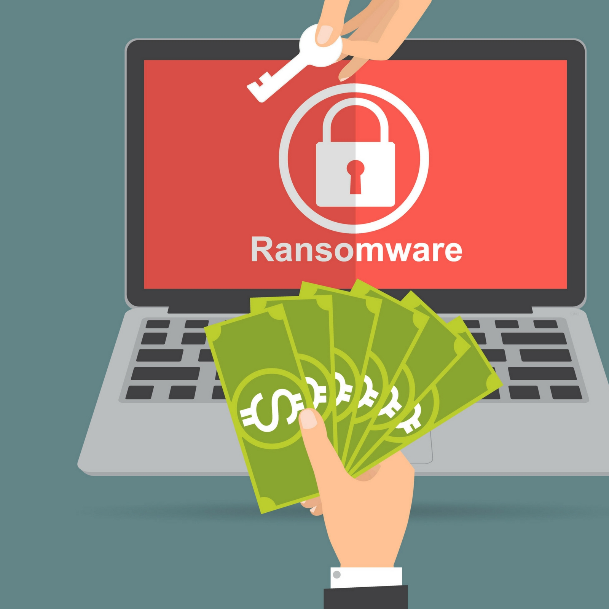
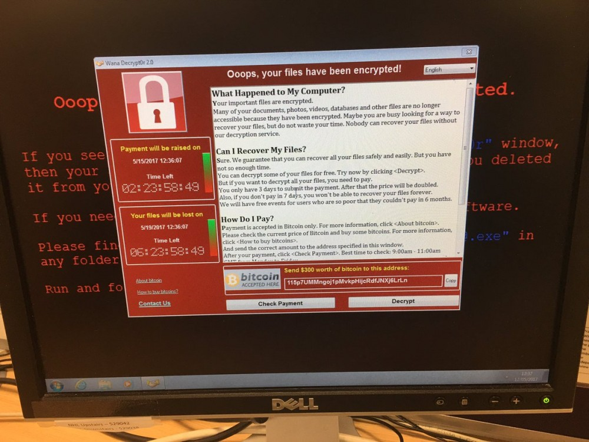

Day 26
Ransomware is a type of malicious software (malware) that encrypts a victim’s files or locks them out of their devices, demanding a ransom payment (typically in cryptocurrency) to restore access. This malware is often delivered through phishing emails, malicious downloads, or compromised websites. Once infected, the victim is given an ultimatum: pay the ransom or lose access to the encrypted data.
In 2017, the WannaCry ransomware attack targeted hundreds of thousands of computers worldwide, exploiting a vulnerability in older versions of Windows. The attack encrypted data and demanded ransom payments in Bitcoin. The most significant impact was felt by hospitals in the UK, where patient care was disrupted as systems went offline, leading to delayed surgeries and other medical procedures. The attack highlighted the devastating effects of ransomware, particularly on critical infrastructure, and emphasized the need for regular system updates and backups to avoid such catastrophic consequences.
There is a reason why most business peoples and firms fear ransomware: